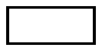

(PHP 4 >= 4.0.6, PHP 5, PHP 7, PHP 8)
imagesetthickness — 设定画线的宽度
$image, int $thickness): bool
imagesetthickness()
把画矩形，多边形，椭圆等等时所用的线宽设为
thickness 个像素。成功时返回 true， 或者在失败时返回 false。
成功时返回 true， 或者在失败时返回 false。
示例 #1 imagesetthickness() example
<?php
// Create a 200x100 image
$im = imagecreatetruecolor(200, 100);
$white = imagecolorallocate($im, 0xFF, 0xFF, 0xFF);
$black = imagecolorallocate($im, 0x00, 0x00, 0x00);
// Set the background to be white
imagefilledrectangle($im, 0, 0, 299, 99, $white);
// Set the line thickness to 5
imagesetthickness($im, 5);
// Draw the rectangle
imagerectangle($im, 14, 14, 185, 85, $black);
// Output image to the browser
header('Content-Type: image/png');
imagepng($im);
imagedestroy($im);
?>
以上例程的输出类似于：
